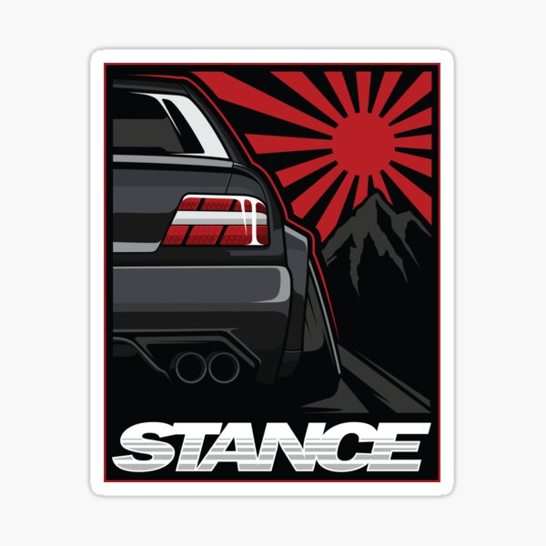

Sobre a Stance Cars!
Nas ruas movimentadas das cidades e em eventos automotivos ao redor do mundo, uma tendência única está ganhando cada vez mais destaque: os Stance Cars. Esses veículos, transformados em verdadeiras obras de arte sobre rodas, são o resultado da convergência entre a paixão pela personalização automotiva e a busca pela estética única.
Os Stance Cars não são apenas veículos rebaixados, eles representam uma subcultura automotiva distinta. A característica mais notável é o rebaixamento extremo, onde a suspensão é meticulosamente ajustada para que as rodas fiquem praticamente alinhadas com as caixas de rodas. Esse olhar agressivo e a sensação de estar colado ao solo são o coração da estética stance.
Além do rebaixamento e das rodas personalizadas,os proprietários de stance cars frequentemente se aventuram na personalização de seus exteriores. Kits de carroceria personalizados, spoilers, saias laterais e difusores são adicionados para acentuar o visual arrojado. Cada modificação é uma oportunidade para os proprietários se destacarem da multidão e expressarem sua personalidade única.
Nosso estabelecimento
Ficamos localizados na Rua Francisco Jardim, Bairro Jardim Anchieta, n° 512,Mauá-SP
"Beneficios